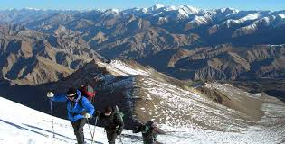
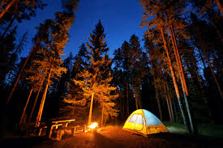
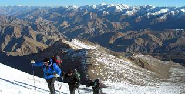
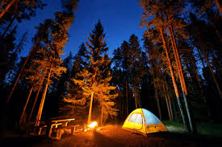

Leh-Ladakh, a high-altitude desert region, is a paradise for adventurers and nature lovers. Known for its surreal landscapes, majestic mountains, and pristine lakes, it offers a once-in-a-lifetime experience. The Buddhist monasteries and unique culture make it a spiritually enriching destination.
Popular Places to Visit:
- Pangong Lake
- Leh Palace
- Magnetic Hill
- Shanti Stupa
- Hemis Monastery
- Nubra Valley
- Tso Moriri Lake


Adventure Activities:
- River Rafting 🌊
- Bike Expedition 🏍️
- Trekking 🏔️
- Camping 🏕️

 



Packages & Pricing
| Package Name | Duration | Inclusions | Starting Price (₹) |
|---|---|---|---|
| Ladakh Adventure | 5N / 6D | Trekking, Camping, Sightseeing, Transport | 12000 |
| Bike Expedition | 7N / 8D | Bike Rental, Guide, Fuel, Accommodations | 25000 |